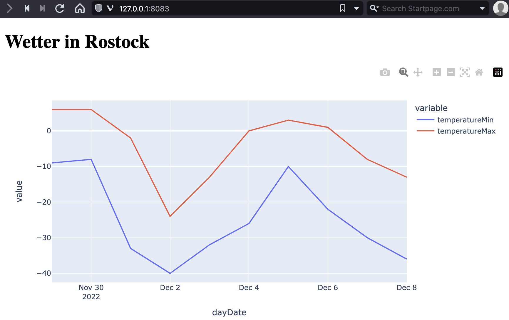

Pakete#
Code in Dateien, Module und Pakete aufteilen#
Größere Programme enthalten oft dutzende Klassen mit hunderten Funktionen und vielen tausend Zeilen Code. Hier wird es sehr schnell schwer einen Überblick zu behalten, wenn alle Klassen in einer Datei definiert sind. Insbesondere wenn verschiedene Programmierer an verschiedenen Stellen im Programm arbeiten, kommt es dann sehr schnell zu Versionskonflikten, wenn Leute an ähnlichen Dateien arbeiten.
Um dies organisiert und übersichtlich zu halten, wird Code in mehrere Dateien mit der Erweiterung .py aufgespalten. Dabei ist es üblich jeweils eine Datei
pro Klasse, wenn Klassen definiert werden
pro Thema, wenn Hilfsfunktionen definiert werden (z.B. Mathematik-Funktionen, …)
pro Aufgabenbereich, wenn (z.B. Laden von Daten getrennt von deren Verarbeitung. So kann man z.B. später andere Verarbeitungsschritte definieren und das Laden wiederverwenden)
Speichern wir jede Klasse der Geometrieelemente aus dem Teil der Klassendefinition aus der letzten Vorlesung so hätten wir dann z.B. eine Projektstruktur entsprechend:
üìÅ geometry
üìÑ ImmutablePoint.py
üìÑ Point.py
üìÑ Line.py
üìÑ Pentagon.py
üìÑ Polygon.py
üìÑ Tetragon.py
üìÑ Triangle.py
Dabei enthält jede Datei nur den Code der gleichnamigen Klasse, auch wenn dies nur wenige Zeilen sind, wie im Fall der Klassen Triangle, Tetragon und Pentagon. Entscheidend ist, dass wenn ein Programmierer nach dem Code für eine Klasse sucht, er genau sieht in welcher Datei dieser zu finden ist und nicht groß suchen muss.
Noch größere Projekte spalten man in mehrere Module indem man weitere Unterverzeichnisse anlegt. So wollen wir z.B. alle generischen Klassen für Punkte in das Verzeichnis points gruppieren und alle geometrischen Formen in das Verzeichnis shapes. So lassen sich größere Projekte gut strukturieren.
Die Summe aller Module formt dann ein Package. In diesem Fall das Package geometry, welches wir in verschiedenen Implementierungen wieder verwenden können.
üìÅ geometry
üìÅ points
üìÑ ImmutablePoint.py
üìÑ Point.py
üìÅ shapes
üìÑ Line.py
üìÑ Pentagon.py
üìÑ Polygon.py
üìÑ Tetragon.py
üìÑ Triangle.py
main() - Der Startpunkt eines Programmes#
Wenn Code über mehrere Dateien verteilt ist, braucht Python einen Hinweis welcher Code ausgeführt werden soll. Hierfür definiert man die spezielle Einstiegsfunktion main(). Sie gibt es in fast allen Programmiersprachen und gibt immer den Startpunkt eines Programms an.
In Python hat sie entweder keine Argumente oder sie erhält diese dynamisch, wenn sie vom Nutzer / von einem anderen Programm aufgerufen wird (a.k.a. Kommandozeilenargumente).
def main():
print("This is the main function")
Allerdings möchte man vermeiden, dass die Funktion main() auch aufgerufen wird, wenn die Python-Datei zum Beispiel als Bibliothek eingebunden wird, wo man nur an den Funktionen interessiert ist. Deshalb nutzt man am Ende einer Datei mit einer main()-Funktion die folgende Verzweigung.
if __name__ == "__main__":
main()
This is the main function
Sie nutzt aus, dass der Wert der Standardvariable __name__ in der Hauptdatei immer '__main__' lautet. Während sie in einer importierten Datei den Namen der Hauptdatei angibt.
Importieren von Modulen#
Um zu vermeiden, dass ständig unnötiger Code geladen wird lädt Python diesen Code nicht automatisch. Wollen wir also den Code in unseren Dateien, Modulen und Packages nutzen so müssen wir vorher Python anweisen diesen zu laden. Dieses Importieren weist man mit dem Befehl import an.
Ein einfacher Import ist der import ganzer Pakete. Dies geschieht, indem wir import und dem Paketnamen schreiben.
import geometry.points.ImmutablePoint
import geometry.shapes.Line
def main():
point_1 = geometry.points.ImmutablePoint.ImmutablePoint(x=54.083336, y=12.108811)
point_2 = geometry.points.ImmutablePoint.ImmutablePoint(y=12.094167, x=54.075211)
linie_1 = geometry.shapes.Line.Line(start=point_1, end=point_2)
print(f"Die Länge der Linie zwischen Punkt 1 und 2 ist: {linie_1.length()}")
if __name__ == "__main__":
main()
Die Länge der Linie zwischen Punkt 1 und 2 ist: 0.016747010509340444
Der Nachteil des Imports ganzer Pakete ist, dass wenn wir hieraus einzelne Klassen referenzieren wollen, die sich in Untermodulen befinden, so müssen wir den kompletten Pfad der Klasse angeben. In dem Beispiel oben zum Beispiel geometry.points.ImmutablePoint.ImmutablePoint.
Deshalb importiert man meist einzelne Module indem man den Pfad eines Moduls angibt, wie zum Beispiel geometry.points.ImmutablePoint.ImmutablePoint. Hierbei kann man den importierten Modulen auch neue Namen geben wie point oder line in dem Beispiel unten.
import geometry.points.ImmutablePoint as point
import geometry.shapes.Line as line
def main():
point_1 = point.ImmutablePoint(x=54.083336, y=12.108811)
point_2 = point.ImmutablePoint(y=12.094167, x=54.075211)
linie_1 = line.Line(start=point_1, end=point_2)
print(f"Die Länge der Linie zwischen Punkt 1 und 2 ist: {linie_1.length()}")
if __name__ == "__main__":
main()
Die Länge der Linie zwischen Punkt 1 und 2 ist: 0.016747010509340444
Alternativ lassen sich auch Teile eines Moduls mit dem Platzhalter * und dem Befehl from importieren. Alle Elemente werden mit dem Platzhalter * importiert. Spezifische Elemente wie einzelne Klassen können auch direkt angegeben werden, wie im folgenden Beispiel Line.
from geometry.points.ImmutablePoint import *
from geometry.shapes.Line import Line
def main():
point_1 = ImmutablePoint(x=54.083336, y=12.108811)
point_2 = ImmutablePoint(y=12.094167, x=54.075211)
linie_1 = Line(start=point_1, end=point_2)
print(f"Die Länge der Linie zwischen Punkt 1 und 2 ist: {linie_1.length()}")
if __name__ == "__main__":
main()
Die Länge der Linie zwischen Punkt 1 und 2 ist: 0.016747010509340444
Standard Paktete aus Python importieren#
Python beinhaltet viele Standardpakete für typische Aufgaben. Für die Bau- und Umweltinformatik sind die folgenden am sinnvollsten:
packet |
description |
|---|---|
collections |
Mehr komplexe Datentypen zum zählen, sortieren |
http |
Funktionen des HTTP-Internetprotokolls wie Web-Server |
json |
Funktionen um Objekte als Text abzuspeichern |
logging |
Funktionen um Logs zu schreiben |
math |
Mathematische Funktionen |
os |
Funktionen um Dateien zu finden, laden und speichern |
pickle |
Funktionen um Objekte binär abzuspeichern |
pprint |
print-Funktionen um Objekte schöner (pretty) auszugeben |
random |
Funktionen zum Erzeugen von Zufallszahlen |
re |
Funktionen für Reguläre Ausdrücke um Text zu suchen |
sys |
Funktionen um Systeminformationen zu erhalten |
time |
Funktionen für Zeit und Datumsangaben |
timeit |
Funktionen um die Performance von Funktionen zu testen |
traceback |
Funktionen um den Stack aufzulisten |
urllib |
Funktionen um ULRs im Internet zu laden und verarbeiten |
Von der Liste haben wir die Bibliotheken math, time, timeit, traceback und logging schon kennen gelernt und benutzt. Die anderen Pakete bieten allerdings weitere sinnvolle Funktionen.
Wollen wir zum Beispiel alle Dateien in einem Verzeichnis auflisten, so nutzen wir das Paket os.
import os
folder = "geometry/shapes/"
for count, filename in enumerate(os.listdir(folder)):
if os.path.isfile(os.path.join(folder, filename)):
path = os.path.join(folder, filename)
print(path)
geometry/shapes/Polygon.py
geometry/shapes/Triangle.py
geometry/shapes/Pentagon.py
geometry/shapes/Line.py
geometry/shapes/Tetragon.py
Viele Webseiten bieten Programmierschnittstellen an, so genannte APIs, da diese APIs auch von den eigenen Webseiten genutzt werden, um Daten nachzuladen, die auf der Webseite angezeigt werden. Die APIs nutzen meist das JSON-Format um Daten auszutauschen. Dies ist ein Text-basiertes Dateiformat, das in Python sehr stark dem dict-Datentyp ähnelt, aber auch alle anderen primitiven und zusammengesetzten Datentypen von Python unterstützt.
Wir möchten zum Beispiel die Wetterdaten einer Wetterstation in Deutschland analysieren. Diese Daten bekommen wir beim Deutschen Wetterdiest. Diese Daten kann man sich auch von der API herunterladen. Hierfür braucht man die ID (Identifikationsnummer) einer Wetterstation welche hier zu finden ist. Wir nehmen als Beispiel eine Station im Hansaviertel in Rostock mit der ID 12495.
Dann kann man die Wetterdaten mit Python mit Hilfe des Paketes urllib von der API laden. Das JSON-Format können wir mit dem json Paket verarbeiten. Wir laden dazu zuerst vom Deutschen Wetterdienst ein binäres Datenpaket vom Datentype bytes. Dieses konvertieren wir mit der Funktion loads aus dem json Paket in ein Python dict. Um das schöner lesbar auszugeben, nutzen wir die Funktion pprint aus dem Paket pprint (pretty-print).
import urllib.request
import json
import pprint
stationID='12495' # Rostock-Hansaviertel
with urllib.request.urlopen(f'https://dwd.api.proxy.bund.dev/v30/stationOverviewExtended?stationIds={stationID}') as f:
data=f.read() # Dies gibt uns ein binären Datentyp zurück
wetter=json.loads(data) # Wir konvertieren den binären Datentyp in ein dict
pprint.pprint(wetter, indent=2, compact=True)
{ '12495': { 'days': [ { 'dayDate': '2024-06-17',
'icon': 2,
'icon1': None,
'icon2': None,
'moonPhase': 2,
'moonrise': 1718633057000,
'moonset': 1718667525000,
'precipitation': 21,
'stationId': None,
'sunrise': 1718590459000,
'sunset': 1718650141000,
'sunshine': 32767,
'temperatureMax': 243,
'temperatureMin': 154,
'windDirection': 3040,
'windGust': 296,
'windSpeed': 111},
{ 'dayDate': '2024-06-18',
'icon': 2,
'icon1': None,
'icon2': None,
'moonPhase': 3,
'moonrise': 1718724016000,
'moonset': 1718754939000,
'precipitation': 0,
'stationId': None,
'sunrise': 1718676862000,
'sunset': 1718736561000,
'sunshine': 32767,
'temperatureMax': 261,
'temperatureMin': 155,
'windDirection': 2630,
'windGust': 315,
'windSpeed': 93},
{ 'dayDate': '2024-06-19',
'icon': 19,
'icon1': None,
'icon2': None,
'moonPhase': 3,
'moonrise': 1718815132000,
'moonset': 1718842763000,
'precipitation': 32,
'stationId': None,
'sunrise': 1718763269000,
'sunset': 1718822979000,
'sunshine': 32767,
'temperatureMax': 302,
'temperatureMin': 172,
'windDirection': 2170,
'windGust': 408,
'windSpeed': 111},
{ 'dayDate': '2024-06-20',
'icon': 2,
'icon1': None,
'icon2': None,
'moonPhase': 3,
'moonrise': 1718906198000,
'moonset': 1718842763000,
'precipitation': 0,
'stationId': None,
'sunrise': 1718849678000,
'sunset': 1718909394000,
'sunshine': 32767,
'temperatureMax': 220,
'temperatureMin': 140,
'windDirection': 3100,
'windGust': 333,
'windSpeed': 148},
{ 'dayDate': '2024-06-21',
'icon': 2,
'icon1': None,
'icon2': None,
'moonPhase': 3,
'moonrise': 1718996843000,
'moonset': 1718931228000,
'precipitation': 0,
'stationId': None,
'sunrise': 1718936091000,
'sunset': 1718995805000,
'sunshine': 32767,
'temperatureMax': 270,
'temperatureMin': 120,
'windDirection': 2230,
'windGust': 259,
'windSpeed': 93},
{ 'dayDate': '2024-06-22',
'icon': 27,
'icon1': None,
'icon2': None,
'moonPhase': 4,
'moonrise': 1719086653000,
'moonset': 1719020643000,
'precipitation': 5,
'stationId': None,
'sunrise': 1719022506000,
'sunset': 1719082214000,
'sunshine': 32767,
'temperatureMax': 258,
'temperatureMin': 171,
'windDirection': 2840,
'windGust': 352,
'windSpeed': 130},
{ 'dayDate': '2024-06-23',
'icon': 2,
'icon1': None,
'icon2': None,
'moonPhase': 4,
'moonrise': 1719175532000,
'moonset': 1719111125000,
'precipitation': 3,
'stationId': None,
'sunrise': 1719108924000,
'sunset': 1719168619000,
'sunshine': 32767,
'temperatureMax': 226,
'temperatureMin': 155,
'windDirection': 2930,
'windGust': 352,
'windSpeed': 130},
{ 'dayDate': '2024-06-24',
'icon': 3,
'icon1': None,
'icon2': None,
'moonPhase': 4,
'moonrise': 1719263654000,
'moonset': 1719202449000,
'precipitation': 0,
'stationId': None,
'sunrise': 1719195345000,
'sunset': 1719255022000,
'sunshine': 32767,
'temperatureMax': 226,
'temperatureMin': 140,
'windDirection': 2920,
'windGust': 370,
'windSpeed': 148},
{ 'dayDate': '2024-06-25',
'icon': 2,
'icon1': None,
'icon2': None,
'moonPhase': 4,
'moonrise': 1719351296000,
'moonset': 1719294152000,
'precipitation': 0,
'stationId': None,
'sunrise': 1719281770000,
'sunset': 1719341422000,
'sunshine': 32767,
'temperatureMax': 226,
'temperatureMin': 133,
'windDirection': 3010,
'windGust': 333,
'windSpeed': 130},
{ 'dayDate': '2024-06-26',
'icon': 2,
'icon1': None,
'icon2': None,
'moonPhase': 5,
'moonrise': 1719438645000,
'moonset': 1719385865000,
'precipitation': 0,
'stationId': None,
'sunrise': 1719368196000,
'sunset': 1719427818000,
'sunshine': 32767,
'temperatureMax': 220,
'temperatureMin': 134,
'windDirection': 3080,
'windGust': 352,
'windSpeed': 148}],
'forecast1': { 'cloudCoverTotal': [],
'dewPoint2m': [ 130, 139, 143, 143, 140, 138, 135,
133, 132, 131, 132, 137, 144, 150,
158, 161, 160, 161, 161, 161, 161,
161, 161, 163, 166, 168, 170, 172,
169, 168, 166, 164, 162, 161, 159,
163, 167, 174, 180, 184, 185, 183,
180, 177, 173, 170, 167, 173, 173,
174, 175, 174, 171, 166, 164],
'humidity': [ 505, 579, 652, 724, 775, 809, 825,
835, 840, 851, 862, 873, 858, 801,
763, 709, 647, 610, 578, 558, 548,
541, 541, 561, 593, 637, 694, 770,
813, 860, 887, 898, 909, 927, 921,
927, 882, 814, 753, 697, 630, 566,
524, 494, 465, 451, 451, 482, 505,
557, 639, 691, 742, 760, 793],
'icon': [ 32767, 32767, 32767, 32767, 32767, 32767,
32767, 4, 32767, 32767, 32767, 32767,
32767, 2, 32767, 32767, 32767, 32767, 2,
2, 2, 2, 2, 2, 2, 2, 2, 2, 2, 2, 2, 2, 2,
2, 2, 2, 2, 2, 2, 2, 2, 2, 2, 2, 2, 2, 2,
2, 2, 2, 2, 2, 2, 2, 2, 2, 2, 2, 2, 2, 2,
2, 2, 2, 2, 2, 2, 2, 2, 2, 19, 19, 19],
'icon1h': [ 2, 2, 2, 2, 2, 2, 2, 2, 2, 2, 2, 2, 2,
2, 2, 2, 2, 2, 2, 2, 2, 2, 2, 2, 2, 2,
2, 2, 2, 2, 2, 2, 2, 2, 2, 2, 2, 2, 2,
2, 2, 2, 2, 2, 2, 2, 2, 2, 2, 2, 2, 2,
19, 19, 19],
'isDay': [ False, False, False, False, False, False,
False, True, False, False, False, False,
False, True, False, False, False, False,
True, True, True, True, False, False,
False, False, False, False, False, True,
True, True, True, True, True, True, True,
True, True, True, True, True, True, True,
True, True, False, False, False, False,
False, False, False, True, True, True,
True, True, True, True, True, True, True,
True, True, True, True, True, True, True,
False, False, False],
'precipitationProbablity': None,
'precipitationProbablityIndex': None,
'precipitationTotal': [ 32767, 32767, 32767, 32767,
32767, 32767, 32767, 32767,
32767, 32767, 32767, 32767,
32767, 32767, 32767, 32767,
32767, 32767, 0, 0, 0, 0, 0,
0, 0, 0, 0, 0, 0, 0, 0, 0,
0, 0, 0, 0, 0, 0, 0, 0, 0,
0, 0, 0, 0, 0, 0, 0, 0, 0,
0, 0, 0, 0, 0, 0, 0, 0, 0,
0, 0, 0, 0, 0, 0, 0, 0, 0,
0, 0, 16, 15, 1],
'start': 1718575200000,
'stationId': '12495',
'sunshine': [ 32767, 32767, 32767, 32767, 32767,
32767, 32767, 32767, 32767, 32767,
32767, 32767, 32767, 32767, 32767,
32767, 32767, 32767, 32767, 32767,
32767, 32767, 32767, 32767, 32767,
32767, 32767, 32767, 32767, 32767,
32767, 32767, 32767, 32767, 32767,
32767, 32767, 32767, 32767, 32767,
32767, 32767, 32767, 32767, 32767,
32767, 32767, 32767, 32767, 32767,
32767, 32767, 32767, 32767, 32767],
'surfacePressure': [ 10147, 10148, 10150, 10155,
10159, 10161, 10165, 10167,
10167, 10169, 10168, 10168,
10173, 10176, 10178, 10180,
10180, 10179, 10179, 10175,
10172, 10169, 10168, 10168,
10166, 10166, 10167, 10167,
10166, 10164, 10164, 10161,
10159, 10154, 10152, 10150,
10146, 10142, 10138, 10135,
10130, 10126, 10121, 10117,
10111, 10108, 10105, 10106,
10104, 10109, 10113, 10121,
10127, 10135, 10143],
'temperature': [ 32767, 32767, 161, 32767, 32767,
32767, 32767, 32767, 170, 32767,
32767, 32767, 32767, 32767, 229,
32767, 32767, 32767, 32767, 239,
226, 211, 194, 180, 171, 165, 161,
159, 156, 155, 158, 168, 185, 201,
216, 230, 241, 250, 256, 259, 261,
261, 257, 251, 241, 229, 214, 202,
192, 185, 181, 177, 173, 172, 175,
187, 207, 226, 243, 261, 277, 287,
294, 300, 302, 299, 294, 286, 270,
248, 234, 219, 210, 201, 194, 182,
172, 162, 159, 158, 161, 166, 173,
184, 193, 197, 204, 210, 216, 219,
220, 217, 208, 193, 178, 161, 149,
140, 133, 127, 123, 120, 124, 139,
163, 190, 211, 227, 238, 248, 256,
262, 265, 270, 269, 263, 250, 233,
214, 200, 191, 185, 180, 175, 172,
171, 176, 186, 197, 215, 224, 234,
245, 251, 255, 253, 258, 252, 247,
241, 229, 211, 198, 187, 181, 174,
164, 163, 157, 155, 156, 157, 167,
179, 191, 201, 209, 216, 220, 222,
224, 226, 222, 216, 209, 196, 182,
170, 160, 155, 151, 149, 146, 140,
147, 158, 164, 181, 196, 205, 214,
218, 223, 224, 226, 226, 224, 219,
211, 199, 183, 169, 160, 158, 148,
140, 135, 133, 135, 145, 157, 173,
185, 197, 207, 213, 218, 223, 226,
226, 223, 216, 205, 192, 177, 164,
155, 150, 144, 139, 135, 134, 137,
142, 155, 168, 179, 188, 201, 207,
212, 217, 220, 220, 218, 213, 208,
198, 184, 171, 163, 157],
'temperatureStd': [ 0, 0, 0, 0, 0, 0, 0, 0, 0, 0, 0,
0, 0, 0, 0, 0, 0, 0, 0, 9, 13,
14, 12, 12, 12, 12, 12, 11, 11,
10, 12, 12, 12, 12, 12, 14, 12,
12, 13, 12, 15, 16, 15, 16, 16,
17, 16, 15, 14, 13, 13, 12, 12,
12, 12, 10, 12, 13, 14, 14, 13,
13, 14, 14, 14, 15, 17, 17, 17,
16, 16, 16, 15, 15, 18, 18, 17,
18, 17, 14, 13, 14, 13, 11, 12,
11, 12, 11, 11, 12, 12, 13, 14,
14, 14, 14, 15, 16, 15, 17, 16,
16, 17, 16, 15, 15, 15, 15, 14,
15, 15, 15, 15, 15, 17, 17, 19,
18, 17, 17, 16, 17, 17, 18, 18,
18, 16, 15, 16, 18, 20, 21, 22,
23, 24, 23, 23, 24, 23, 22, 20,
20, 19, 18, 19, 17, 17, 18, 18,
18, 17, 16, 16, 19, 20, 20, 20,
20, 20, 21, 21, 23, 22, 22, 22,
20, 19, 18, 19, 19, 19, 19, 20,
20, 21, 19, 19, 20, 20, 22, 21,
22, 23, 23, 22, 22, 22, 22, 23,
22, 20, 20, 20, 20, 19, 19, 19,
19, 19, 18, 19, 22, 23, 23, 24,
24, 25, 25, 25, 25, 25, 25, 24,
22, 21, 20, 20, 20, 20, 20, 19,
20, 20, 19, 20, 21, 22, 23, 22,
23, 23, 24, 24, 25, 24, 26, 26,
25, 23, 23, 23, 23],
'timeStep': 3600000,
'windDirection': None,
'windGust': None,
'windSpeed': None},
'forecast2': { 'cloudCoverTotal': [],
'dewPoint2m': [ 143, 131, 119, 109, 102, 112, 119,
112, 103, 114, 125, 120, 121, 135,
143, 137, 134, 147, 164, 166, 164,
159, 152, 144, 139, 142, 150, 141,
143, 146, 147, 134, 129, 133, 140,
132, 132, 131, 132, 123, 118, 122,
125, 118, 117, 118, 122, 116, 110,
114, 121, 116, 113, 119, 125, 121],
'humidity': [ 831, 840, 706, 568, 483, 513, 684,
832, 876, 849, 579, 448, 408, 452,
640, 736, 784, 781, 689, 593, 562,
602, 748, 826, 891, 908, 771, 624,
602, 644, 800, 873, 895, 851, 701,
581, 554, 574, 722, 797, 895, 861,
681, 547, 502, 537, 702, 801, 848,
833, 689, 560, 507, 550, 685, 792],
'icon': [ 3, 3, 2, 2, 2, 2, 1, 1, 1, 1, 2, 2, 2, 2,
2, 2, 2, 2, 2, 2, 27, 27, 27, 2, 2, 3, 2,
2, 19, 19, 2, 2, 2, 2, 3, 3, 3, 3, 2, 2,
2, 2, 2, 2, 2, 2, 2, 2, 2, 2, 2, 2, 2, 2,
2, 2],
'icon1h': [ 3, 3, 2, 2, 2, 2, 1, 1, 1, 1, 2, 2, 2,
2, 2, 2, 2, 2, 2, 2, 27, 27, 27, 2, 2,
3, 2, 2, 19, 19, 2, 2, 2, 2, 3, 3, 3, 3,
2, 2, 2, 2, 2, 2, 2, 2, 2, 2, 2, 2, 2,
2, 2, 2, 2, 2],
'isDay': [ False, True, True, True, True, True,
True, False, False, True, True, True,
True, True, True, False, False, True,
True, True, True, True, True, False,
False, True, True, True, True, True,
True, False, False, True, True, True,
True, True, True, False, False, True,
True, True, True, True, True, False,
False, True, True, True, True, True,
True, False],
'precipitationProbablity': None,
'precipitationProbablityIndex': None,
'precipitationTotal': [ 0, 0, 0, 0, 0, 0, 0, 0, 0,
0, 0, 0, 0, 0, 0, 0, 0, 0,
0, 0, 1, 3, 1, 0, 0, 0, 0,
0, 1, 2, 0, 0, 0, 0, 0, 0,
0, 0, 0, 0, 0, 0, 0, 0, 0,
0, 0, 0, 0, 0, 0, 0, 0, 0,
0, 0],
'start': 1718834400000,
'stationId': '12495',
'sunshine': [ 32767, 32767, 32767, 32767, 32767,
32767, 32767, 32767, 32767, 32767,
32767, 32767, 32767, 32767, 32767,
32767, 32767, 32767, 32767, 32767,
32767, 32767, 32767, 32767, 32767,
32767, 32767, 32767, 32767, 32767,
32767, 32767, 32767, 32767, 32767,
32767, 32767, 32767, 32767, 32767,
32767, 32767, 32767, 32767, 32767,
32767, 32767, 32767, 32767, 32767,
32767, 32767, 32767, 32767, 32767,
32767],
'surfacePressure': [ 10171, 10193, 10210, 10216,
10208, 10199, 10201, 10211,
10208, 10207, 10197, 10185,
10165, 10149, 10145, 10143,
10133, 10125, 10129, 10128,
10124, 10120, 10124, 10135,
10138, 10136, 10134, 10136,
10135, 10135, 10146, 10154,
10154, 10150, 10150, 10146,
10141, 10146, 10156, 10161,
10168, 10171, 10169, 10166,
10163, 10160, 10166, 10173,
10174, 10175, 10173, 10168,
10160, 10155, 10169, 10175],
'temperature': [],
'temperatureStd': [],
'timeStep': 10800000,
'windDirection': None,
'windGust': None,
'windSpeed': None},
'forecastStart': None,
'threeHourSummaries': None,
'warnings': []}}
Externe Pakete installieren und importieren#
Die Stärke von Python ist allerdings die riesige Auswahl an vorhandenen Paketen. Für die meisten Anwendungszwecke gibt es entsprechende Python Packages. Ein solches Verzeichnis is PyPi das über 400.000 Pakete listet.
Die Installation neuer Pakete für Python ist einfach. Hierfür öffnet man ein Terminal (Kommandozeile) und gibt den Befehl pip install <packetname> ein.
Zum Beispiel wollen wir die eben geladenen Wetterdaten anzeigen. Hierfür nutzen wir:
zuerst das Paket
pandaszum Erzeugen einer Tabelle aus den Wetterdaten.dann nutzen wir das Paket
plotlyzum Zeichnen eines Diagramms.zuletzt erzeugen wir uns einen Webserver mit
dashder uns das Diagramm immer anzeigt
Alles drei installieren wir mit pip. Wir können das in einem Aufruf machen. Wir nutzen den --quiet Switch, um die Ausgabe zu reduzieren.
pip install pandas plotly dash --quiet
[notice] A new release of pip is available: 22.3 -> 24.0
[notice] To update, run: pip install --upgrade pip
Note: you may need to restart the kernel to use updated packages.
Jetzt laden wir beide Pakete, wobei man üblicher Weise pandas die Abkürzung pd zuweist und Plotly Express, welches einfach zu bedienen ist, die Abkürzung px.
import pandas as pd
import plotly.express as px
import dash
Nun wandeln wir die tageweise Wettervorhersage days der Daten von der Wetterstation mit der stationID zuerst in eine Tabelle um, da diese von Plotly express verarbeitet werden kann. Tabellen heißen in Pandas DataFrames (allgemein werden so Tabellen in der Data Science genannt). Wir erzeugen also aus der Wettervorhersage ein neue Objektinstanz vom Typ DataFrame via
df = pd.DataFrame(wetter[stationID]['days'])
df
| stationId | dayDate | temperatureMin | temperatureMax | precipitation | windSpeed | windGust | windDirection | sunshine | sunrise | sunset | moonrise | moonset | moonPhase | icon | icon1 | icon2 | |
|---|---|---|---|---|---|---|---|---|---|---|---|---|---|---|---|---|---|
| 0 | None | 2024-06-17 | 154 | 243 | 21 | 111 | 296 | 3040 | 32767 | 1718590459000 | 1718650141000 | 1718633057000 | 1718667525000 | 2 | 2 | None | None |
| 1 | None | 2024-06-18 | 155 | 261 | 0 | 93 | 315 | 2630 | 32767 | 1718676862000 | 1718736561000 | 1718724016000 | 1718754939000 | 3 | 2 | None | None |
| 2 | None | 2024-06-19 | 172 | 302 | 32 | 111 | 408 | 2170 | 32767 | 1718763269000 | 1718822979000 | 1718815132000 | 1718842763000 | 3 | 19 | None | None |
| 3 | None | 2024-06-20 | 140 | 220 | 0 | 148 | 333 | 3100 | 32767 | 1718849678000 | 1718909394000 | 1718906198000 | 1718842763000 | 3 | 2 | None | None |
| 4 | None | 2024-06-21 | 120 | 270 | 0 | 93 | 259 | 2230 | 32767 | 1718936091000 | 1718995805000 | 1718996843000 | 1718931228000 | 3 | 2 | None | None |
| 5 | None | 2024-06-22 | 171 | 258 | 5 | 130 | 352 | 2840 | 32767 | 1719022506000 | 1719082214000 | 1719086653000 | 1719020643000 | 4 | 27 | None | None |
| 6 | None | 2024-06-23 | 155 | 226 | 3 | 130 | 352 | 2930 | 32767 | 1719108924000 | 1719168619000 | 1719175532000 | 1719111125000 | 4 | 2 | None | None |
| 7 | None | 2024-06-24 | 140 | 226 | 0 | 148 | 370 | 2920 | 32767 | 1719195345000 | 1719255022000 | 1719263654000 | 1719202449000 | 4 | 3 | None | None |
| 8 | None | 2024-06-25 | 133 | 226 | 0 | 130 | 333 | 3010 | 32767 | 1719281770000 | 1719341422000 | 1719351296000 | 1719294152000 | 4 | 2 | None | None |
| 9 | None | 2024-06-26 | 134 | 220 | 0 | 148 | 352 | 3080 | 32767 | 1719368196000 | 1719427818000 | 1719438645000 | 1719385865000 | 5 | 2 | None | None |
Nun plotten wir die Daten df als LinienDiagramm mit Hilfe von Plotly wobei wir als x-Axe das Datum wählen (dayDate) und als y-Axe die minimale Temperatur temperatureMin und maximale Temperatur temperatureMax.
fig=px.line(df, x="dayDate", y=["temperatureMin", "temperatureMax"])
fig.show(renderer="svg")

Zuletzt wollen wir dieses Diagramm in einer Webseite auf einem Webserver anzeigen. Hier nutzen wir das Paket dash welches erlaubt eine Webseite mit Python-Befehlen zu erzeugen und darin interaktive Diagramme von Plotly mit anzuzeigen.
import dash
app = dash.Dash()
Dann erzeugen wir eine Webseite mit einer Überschrift (H1), welche den Plot als Graph enthält.
app.layout = dash.html.Div(children = [
dash.html.H1(children='Wetter in Rostock'),
dash.dcc.Graph(id="fare_vs_age", figure=fig)
])
Und starten den Webserver.
app.run_server()
Dash app running on http://127.0.0.1:8050/
Dies startet einen Webserver auf den wir in einem Browser unter http://127.0.0.1:8083/ zugreifen können. Er zeigt uns eine Webseite mit einem interaktiven Diagramm welches die Wetterdaten anzeigt.
